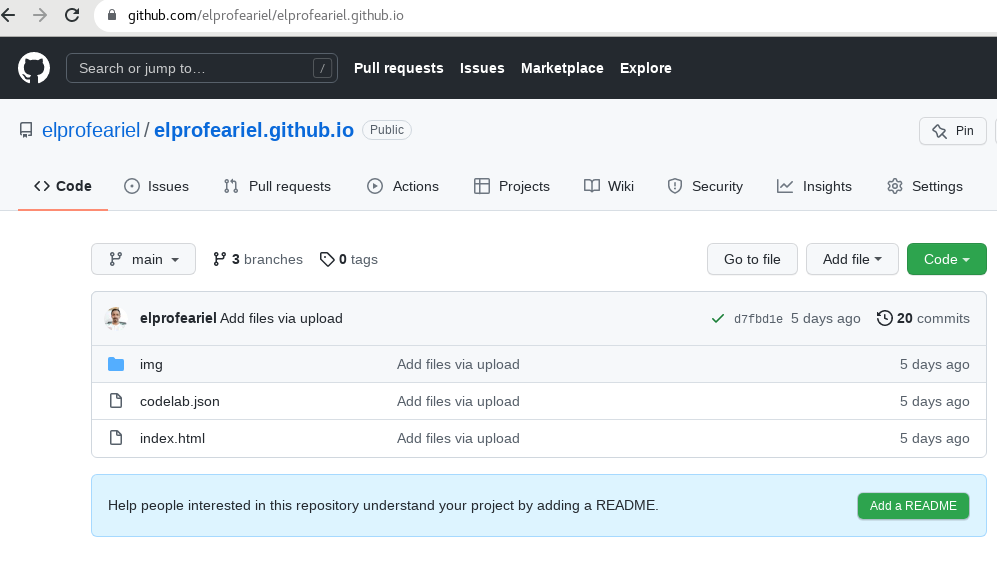
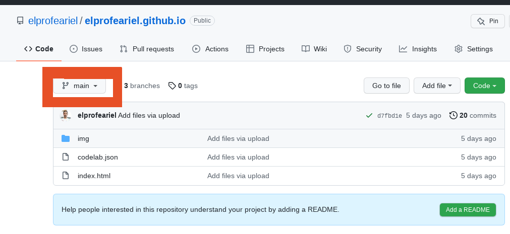
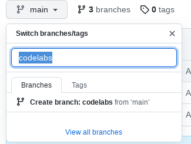
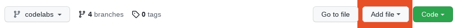
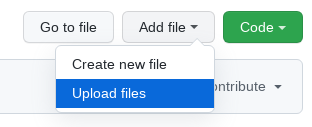
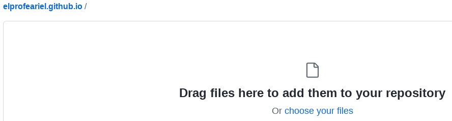
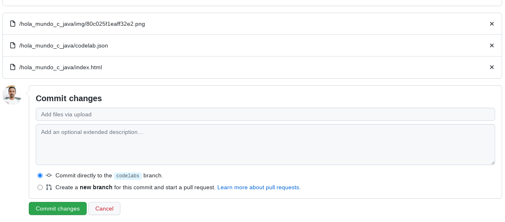
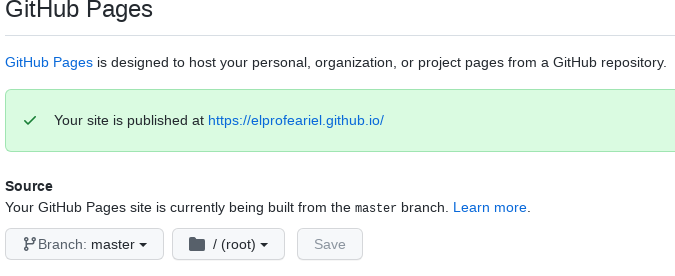
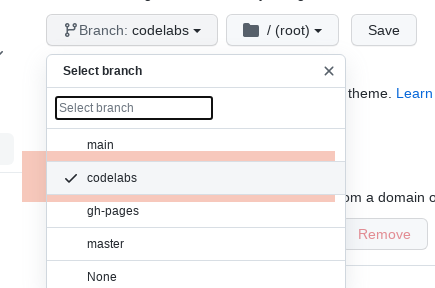

Last Updated: 2022-03-15
Github es un sitio que no proporciona de manera gratuita espacio de almacenamiento para poder subir nuestros proyectos de desarrollo de software u otros tipos de documentos para poder compartirlos con otros desarrolladores o nuestro equipo de trabajo. GitHub también nos permite crear y publicar nuestro sitio web personal o empresarial de manera gratuita.
Así que vamos a aprovechar el espacio que nos proporciona github para publicar nuestros codelabs para poderlos compartir de manera pública con nuestros estudiantes y demás interesados.
En este tutorial subiremos nuestro codelab al repositorio de nuestro sitio web personal en github, lo haremos desde el sitio web.
Puedes seguir los pasos que aquí se indican : Crear un sitio de Páginas de GitHub
Puedes seguir los pasos que aquí se indican según tu Sistema Operativo: Como crear un codelab







GitHub nos permite configurar desde que branch se servirá nuestro sitio web personal, así nosotros podemos crear distintos branchs e ir cambiando según nuestras necesidades.
Para nuestro caso le indicaremos a github que nuestro branch que hemos creado, será nuestro branch para servir nuestro sitio web, en otro tutorial crearemos una pagina inicial desde donde podremos servir todos nuestros codelabs.
Para indicar el branch de nuestro sitio personal nos desplazaremos de manera rápida mediante el siguiente enlace
https://github.com/USER/USER.github.io/settings/pages
Asegurándonos de sustituir la palabra USER por el usuario de cada uno, en mi caso será
https://github.com/elprofeariel/elprofeariel.github.io/settings/pages
Observaremos una imagen como la siguiente:

Aquí debemos elegir el Branch que hemos creado y a continuación la opción save.

Para visualizar nuestro codelab solamente tenemos que ir a la direccion de nuestro sitio web personal de github que se forma de la siguiente forma
https://USER.github.io
Cómo ya se ha indicado, debemos sustituir USER por nuestro nombre de usuario, que en mi caso sería
https://elprofeariel.github.io
A continuación sólo debemos colocar en la URL el nombre de nuestra carpeta de codelab que acabamos de subir en el paso 3, que en mi caso es hola_mundo_c_java, así la URL quedaría
https://elprofeariel.github.io/hola_mundo_c_java/
Y ya podríamos observar nuestro codelab. Si tenemos muchos codelabs por ahora solo tendríamos que cambiar el nombre de nuestra carpeta por el nombre del codelab al que queremos tener acceso.
Ahora ya podemos crear nuestros codelabs, publicarlos en nuestro sitio web personal y compartirlo con nuestros alumnos y todo el público.
Crea tus codelabs y comparte tus resultados.
Puedes encontrar mas tutoriales en mi canal de youtube